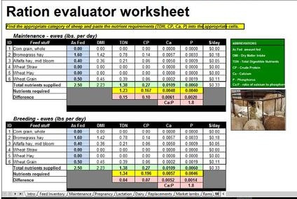

About Shasta Ranch
Shasta Ranch is a 160 acre sheep ranch in southern Oregon located near the City of Klamath Falls. It is owned and operated by Bill and Lori Marion. The climate in southern Oregon is drier and colder than that of areas west of the Cascade mountains. The predominant agricultural products of the area include hay, potatoes, cattle and sheep.
Our Team
Lori
Bill
About the St. Croix Breed
The St. Croix is a breed of sheep native to the U.S. Virgin Islands and named for the island of Saint Croix. They are often also called Virgin Island White because those that were imported into North America were selected for white coloration. On the Island of St. Croix, they come in shades of brown, white and black. The breed is believed to be descended from African sheep that were brought to the Caribbean on slave ships, and is a breed of hair sheep which does not grow wool. The St. Croix is a hardy tropical breed known for its parasite resistance, and is raised primarily for meat production. The St. Croix breed is the foundation breed for Katahdin and Royal White breeds.
Most St. Croix are completely white with others being solid tan, brown, black or white with brown or black spots. Ewes and rams are polled (no horns), and rams have a large throat ruff. Mature ewes weigh 150 lbs and rams weigh up to 200 lbs. Birth weights average 6 to 7 lbs. Tails do not need docking. St. Croix sheep can live in a wide variety of climates. They are well adapted to the hot humid climate of the tropics and can survive in cold temperatures. Their hair coat lets them tolerate the heat, and they grow a thick wool coat in cold winter temperatures. Their coat sheds water. These sheep are known as 'Parasitic Pasture Vacuums' for their ability to clear a pasture of parasites reducing the need to worm sheep. St. Croix also show resistance to hoof rot.
Ewes and rams hit puberty just after 3 months old. Lambs should be separated from their mother after 60 days to prevent impregnation of the ewe. At the age of 7–8 months, ewe lambs have their first estrus cycle. Ewes will ovulate during all months of the year, not following a seasonal breeding period like most sheep. Ewes can lamb at 12 months of age and if well managed, can have two lamb crops in a year, sometimes three in two years. One to four lambs in one lamb crop can be expected, with twins being most common. St. Croix sheep have a high lamb survivability and the ewes are instinctive mothers, usually not requiring much help. Ewes generally produce plenty of milk for their lambs. St. Croix ewes produce ample quantities of milk high in butterfat. In some regions of the United States, ewes are being milked for cheese production. Lambs finish with a minimal amount of fat and have a small bone to fat ratio. Meat is lean and without the tallow taste, as well as being naturally low in cholesterol. Flavor and aroma is described as mild. Meat is judged as having good flavor, juiciness, and tenderness. Lambs have a slightly slower growing rate than other sheep breeds.
St. Croix are easy to handle livestock. They are active without showing signs of being wild or flighty. Charging and head butting is a less common behavior in rams. Sheep tend to be comfortable around people. St. Croix have a good herding instinct and are often used to train herding dogs. These sheep are both grazers and browsers, but not selective eaters. They have been used for weed control due to their preference for weeds. St. Croix sheep are easily managed and are often referred to as "easy keepers". The breed is an excellent choice for a small farm with just a few sheep or large scale meat production.
Flock Management
Our flock is managed on an accelerated lambing schedule to take advantage of the St. Croix's unique ability to breed year-round. Researchers at Cornell University developed the STAR accelerated lambing system for aseasonal breeders such as the St. Croix. Under this system, the flock is divided into three rotating groups. These are:
- Breeding and pregnant ewes and the rams.
- Lambing and/or lactating ewes and their lambs.
- Growing lambs – both market lambs and the replacement ewe lambs.
The chart shows how the three groups rotate through the breeding, lambing, lactation and weening phases. The lambs are then moved to a growing lamb group that will eventually go to market or be put back into a breeding group. The ewes are placed back into a breeding cycle after the lambs are weened. Under this accelerated schedule, it is possible to yield three lamb crops in a two year period. For more information, visit the Cornell University Website.
Nutrition

Key to any breeding program and in particular an accelerated breeding program is proper nutrition. As a sheep or lamb moves through the various phases of the program, their nutritional needs change. In order to ensure that these needs are met, we use the University of Maryland Extension Sheep Ration Evaluator. This series of spreadsheets evaluates a specific feed ration and determines if it meets the specific nutritional needs of sheep or lambs at a specific phase of development. Shown is a sample ration from the UME Ration Evaluator. For more information or to download the ration evaluator, visit the Maryland Small Ruminants webpage Maryland Small Ruminants webpage.
Lambing


Our sheep stay on pasture as much as possible. When ewes near their lambing date, they are moved to a "maternity pen" where they can receive additional feed rations and be more closely observed. When they exhibit signs of labor or are near/past their lambing date, they are moved to a lambing barn. After the lambs are born, they spend 7-10 days in the barn before being returned to the "maternity pen". Once a breeding group has delivered all its lambs, they are moved back to pasture.